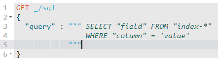

原英文版地址: https://www.elastic.co/guide/en/elasticsearch/reference/7.7/sql-rest-overview.html, 原文档版权归 www.elastic.co 所有
本地英文版地址: ../en/sql-rest-overview.html
本地英文版地址: ../en/sql-rest-overview.html
IMPORTANT: No additional bug fixes or documentation updates
will be released for this version. For the latest information, see the
current release documentation.
Overviewedit
The SQL REST API accepts SQL in a JSON document, executes it, and returns the results. For example:
POST /_sql?format=txt
{
"query": "SELECT * FROM library ORDER BY page_count DESC LIMIT 5"
}
Which returns:
author | name | page_count | release_date -----------------+--------------------+---------------+------------------------ Peter F. Hamilton|Pandora's Star |768 |2004-03-02T00:00:00.000Z Vernor Vinge |A Fire Upon the Deep|613 |1992-06-01T00:00:00.000Z Frank Herbert |Dune |604 |1965-06-01T00:00:00.000Z Alastair Reynolds|Revelation Space |585 |2000-03-15T00:00:00.000Z James S.A. Corey |Leviathan Wakes |561 |2011-06-02T00:00:00.000Z
Using Kibana Console
If you are using Kibana Console
(which is highly recommended), take advantage of the
triple quotes """ when creating the query. This not only automatically escapes double
quotes (") inside the query string but also support multi-line as shown below:
